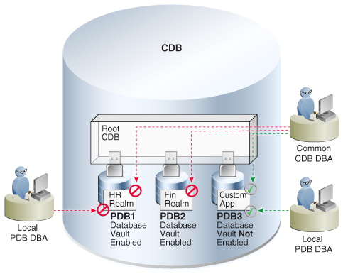

23 Using Oracle Database Vault with a CDB
You can use Oracle Database Vault in a multitenant container database (CDB).
This section contains the following topics:
- About Oracle Database Vault
The Oracle Database Vault security controls protect application data from unauthorized access, and comply with privacy and regulatory requirements. - How Oracle Database Vault Works in a Multitenant Environment
To provide increased security for consolidation, you can use Oracle Database Vault with Oracle Multitenant. - Manually Installing Oracle Database Vault in a Multitenant Environment
Under certain conditions, for a multitenant environment, you must manually install Oracle Database Vault. - Verifying That Database Vault Is Configured and Enabled
TheDBA_DV_STATUS,CDB_DV_STATUS,DBA_OLS_STATUS, andCDB_OLS_STATUSdata dictionary views verify if Oracle Database is configured and enabled. - Registering Database Vault in the CDB Root
In a multitenant environment, you register Oracle Database Vault with common users who will use the Database Vault-enforced roles in the CDB root. - Registering Database Vault Common Users to Manage Specific PDBs
In a multitenant environment, you must register Oracle Database Vault in the root first, then in the PDBs afterward. - Creating Common Database Vault Accounts for a Plugged in Database Vault PDB
From SQL*Plus, in a multitenant environment, you can plug in a database that already has Database Vault enabled. - Realms in a Multitenant Environment
In a multitenant environment, you can create a realm to protect common objects in the application root. - Realm Authorizations in a Multitenant Environment
In a multitenant environment, the rules and behavior for common realm authorizations are similar to the authorizations for other common objects. - Rule Sets and Rules in a Multitenant Environment
In a multitenant environment, you can create a rule set and its associated rules in the application root. - Command Rules in a Multitenant Environment
In a multitenant environment, you can create common and local command rules in either the CDB root or the application root. - Oracle Database Vault Policies in a Multitenant Environment
Oracle Database Vault policies are only local to the pluggable database (PDB) in which they were created. - Converting a Standalone Oracle Database to a PDB and Plugging It into a CDB
You can convert a standalone Oracle Database Release 12c or later database to a PDB, and then plug this PDB into a CDB.
Parent topic: Using Oracle Features in a Multitenant Environment
23.1 About Oracle Database Vault
The Oracle Database Vault security controls protect application data from unauthorized access, and comply with privacy and regulatory requirements.
You can deploy controls to block privileged account access to application data and control sensitive operations inside the database using trusted path authorization. Through the analysis of privileges and roles, you can increase the security of existing applications by using least privilege best practices. Oracle Database Vault secures existing database environments transparently, eliminating costly and time consuming application changes.
Related Topics
Parent topic: Using Oracle Database Vault with a CDB
23.2 How Oracle Database Vault Works in a Multitenant Environment
To provide increased security for consolidation, you can use Oracle Database Vault with Oracle Multitenant.
Oracle Database Vault can prevent privileged user access inside a pluggable database (PDB) and between the PDB and the common privileged user at the container database. Each PDB has its own Database Vault metadata, such as realms, rule sets, command rules, default policies (such as default realms), and so on. In addition, the objects within the DVSYS and DVF schemas are automatically available to any child PDBs. Both schemas are common user schemas.
You can configure common realms in the application root only, but you can create common rule sets and command rules in either the application root or the CDB root. A common command rule in the application root applies to its associated PDBs, and common command rules in the CDB root apply to all PDBs in the CDB environment. The ability to create common realms and command rules enables you to create policies that use a shared set of realms, rule sets, or command rules throughout the CDB environments, rather than having to create these same components for every PDB in the multitenant environment. The common protection applies for all PDBs associated with the application root that have Oracle Database Vault enabled.
You can create individual local policies for each PDB. When you use Database Vault to protect an object, Database Vault subjects common privileges for common objects to the same enforcement rules as local system privileges.
When you configure a PDB that has Database Vault enabled, the DVSYS schema is a common user schema that is stored in the root. This means that all the objects within the DVSYS schema (tables, data dictionary views, user accounts, PL/SQL packages, default policies, and so on) are subject to the common privileges available for this schema. In other words, you can create realms, factors, and so on in the root to protect the schema in the root. Ensure that you configure Database Vault in the root first, before you configure it in the associated PDBs.
When you enable Oracle Database Vault in the CDB root, you can choose either regular mode or strict mode. The settings propagate throughout the CDB based on the setting you choose. For example, suppose a CDB contains both Database Vault-enabled PDBs and PDBs in which Database Vault is not enabled. If you enable Database Vault using regular mode, then both types of PDBs continue to function normally. If you enable Database Vault using strict mode, then the Database Vault-disabled PDBs operate in restricted mode.
Figure 23-1 illustrates how the database in regular mode allows different access for common and local database administrators depending if Database Vault is enabled. In this scenario, neither the common user nor the local users have access to the realms in PDB1 and PDB2. Both the common user and the PDB3 local user have access to the Custom App application in PDB3, where Database Vault is not enabled.
Figure 23-1 Oracle Database Vault in a Multitenant Environment with Regular Mode
Description of "Figure 23-1 Oracle Database Vault in a Multitenant Environment with Regular Mode"
23.3 Manually Installing Oracle Database Vault in a Multitenant Environment
Under certain conditions, for a multitenant environment, you must manually install Oracle Database Vault.
Related Topics
Parent topic: Using Oracle Database Vault with a CDB
23.4 Verifying That Database Vault Is Configured and Enabled
The DBA_DV_STATUS, CDB_DV_STATUS, DBA_OLS_STATUS, and CDB_OLS_STATUS data dictionary views verify if Oracle Database is configured and enabled.
SYS user and users who have been granted the DBA role can query these views.
-
For Database Vault:
-
If you want to find the Database Vault status for a non-multitenant database, or in a multitenant environment for the root only or an individual PDB, then query
DBA_DV_STATUS. For example:SELECT * FROM DBA_DV_STATUS;Output similar to the following appears:
NAME STATUS -------------------- ----------- DV_CONFIGURE_STATUS TRUE DV_ENABLE_STATUS TRUE -
If you want to find the Database Vault status of all PDBs in a multitenant environment, as a common user with administrative privileges, then query
CDB_DV_STATUS, which provides the addition of a container ID (CON_ID) field.
-
-
For Oracle Label Security, query the following data dictionary views, which are similar to their Database Vault equivalent views:
-
DBA_OLS_STATUS -
CDB_OLS_STATUS
-
Parent topic: Using Oracle Database Vault with a CDB
23.5 Registering Database Vault in the CDB Root
In a multitenant environment, you register Oracle Database Vault with common users who will use the Database Vault-enforced roles in the CDB root.
23.6 Registering Database Vault Common Users to Manage Specific PDBs
In a multitenant environment, you must register Oracle Database Vault in the root first, then in the PDBs afterward.
ORA-47503: Database Vault is not enabled on CDB$ROOT error appears.
23.7 Creating Common Database Vault Accounts for a Plugged in Database Vault PDB
From SQL*Plus, in a multitenant environment, you can plug in a database that already has Database Vault enabled.
To enable a common user to manage the Database Vault configuration for this PDB:
23.8 Realms in a Multitenant Environment
In a multitenant environment, you can create a realm to protect common objects in the application root.
The advantage of creating a realm in the application root instead of creating a large number objects and realms around these objects within individual pluggable databases (PDBs) is that you can create them in one place, the application root. This way, you can manage them centrally.
You cannot create a common realm in the CDB root.
A Database Vault common realm can be either a regular realm or a mandatory realm. The realm protects only objects within the application root, not local objects in a PDB. The CDB root, application root, and any affected PDBs all must be Database Vault enabled.
To configure a common realm, you must be commonly granted the DV_OWNER or DV_ADMIN role. To grant common authorizations for a common realm, you must be in the application root. To propagate the realm to the PDBs that are associated with the application root, you must synchronize the application root. For example, to synchronize an application called saas_sales_app
ALTER PLUGGABLE DATABASE APPLICATION saas_sales_app SYNC;Related Topics
Parent topic: Using Oracle Database Vault with a CDB
23.9 Realm Authorizations in a Multitenant Environment
In a multitenant environment, the rules and behavior for common realm authorizations are similar to the authorizations for other common objects.
Local Authorization for a Common Realm
The local authorization for a common realm refers to the authorization a user has for the PDB that this user is accessing.
The rules for the local authorization for a common realm are as follows:
-
A user who has been commonly granted the
DV_OWNERorDV_ADMINrole can grant local authorization to common users, common roles, local users, and local roles. The commonDV_OWNERorDV_ADMINuser can also remove local authorization from a common realm in a PDB. -
A local Database Vault administrator can authorize locally (that is, grant local authorizations to both local and common users) within the PDB. A common Database Vault administrator can also grant authorizations in each PDB. A common realm authorization can only be granted by a common Database Vault administrator in the application root.
-
The common Database Vault administrator can both add or remove local authorization to and from a common realm from within the PDB.
-
If a common user has only local authorization for a common realm, then this user cannot access the common realm in any other PDB than this local authorization.
-
A common user or a common role can have both the local authorization and the common authorization to a common realm at the same time. Removing a common user’s local authorization from a common realm does not affect the common user’s common authorization. Removing a common user’s common authorization from a common realm does not affect the common user’s local authorization.
Common Authorization for a Common Realm
The common authorization for a common realm refers to the authorization a common user or a common role has in the application root while the authorization takes effect in every container that is Database Vault enabled.
The rules for the local authorization for a common realm are as follows:
-
A user who has been commonly granted the
DV_OWNERorDV_ADMINrole can grant common realm authorization to common users or roles in the application root. This common Database Vault administrator can perform the removal of common authorizations while in the application root. -
This common authorization applies to the containers that have been Database Vault enabled in the CDB.
-
If a common user is authorized to a common realm in the application root, then this user has access to the objects protected by the common realm in the application root and any application PDBs.
-
Any rule sets that are associated with a common realm must be common rule sets. The rules that are added to a common rule set that is associated with common authorization cannot involve any local objects.
How the Authorization of a Realm Works in Both the Application Root and in an Individual PDB
During the Database Vault enforcement in a container, a common realm performs the same enforcement behaviors as the same realm when it is used locally in a PDB.
Parent topic: Using Oracle Database Vault with a CDB
23.10 Rule Sets and Rules in a Multitenant Environment
In a multitenant environment, you can create a rule set and its associated rules in the application root.
A common realm must use a common rule set when the associated realm or command rule is evaluated by Database Vault. The common rule set and its rules can only be created in the application root. After the common rule set is created, it exists in every container that is associated with the root where the common rule set is created. The common rule set can only include common rules.
To configure a common rule set and its rules, you must be commonly granted the DV_OWNER or DV_ADMIN role.
Related Topics
Parent topic: Using Oracle Database Vault with a CDB
23.11 Command Rules in a Multitenant Environment
In a multitenant environment, you can create common and local command rules in either the CDB root or the application root.
Common command rules can be associated only with common realms, rule sets, and rules. Local command rules can be associated only with local realm, rule sets, and rules.
To apply these command rules to the entire multitenant environment, you must execute the command rule procedures from the CDB root or application root as a common user who has been granted the DVADM or DVOWNER role. A common command rule that is created in the CDB root will be applied to all PDBs in that CDB environment. A common command rule that is created in the application root will only be applied to the PDBs that are associated with this application root. To propagate the command rule to the PDBs that are associated with the CDB root or application root, you must synchronize the PDB. For example, to synchronize an application root called saas_sales_app to its application PDBs:
ALTER PLUGGABLE DATABASE APPLICATION saas_sales_app SYNC;To synchronize a common command rule in the CDB root to a PDB:
ALTER PLUGGABLE DATABASE APPLICATION APP$CDB$SYSTEM SYNC;You can check a user’s roles by querying the USER_ROLE_PRIVS data dictionary view. To find information about command rules, query the DBA_DV_COMMAND_RULE data dictionary view.
Parent topic: Using Oracle Database Vault with a CDB
23.12 Oracle Database Vault Policies in a Multitenant Environment
Oracle Database Vault policies are only local to the pluggable database (PDB) in which they were created.
That is, if you created the policy in a PDB, then only local realms and command rules can be added to it. You cannot create Database Vault policies that can have common realms or common command rules.
Parent topic: Using Oracle Database Vault with a CDB
23.13 Converting a Standalone Oracle Database to a PDB and Plugging It into a CDB
You can convert a standalone Oracle Database Release 12c or later database to a PDB, and then plug this PDB into a CDB.
Related Topics
Parent topic: Using Oracle Database Vault with a CDB